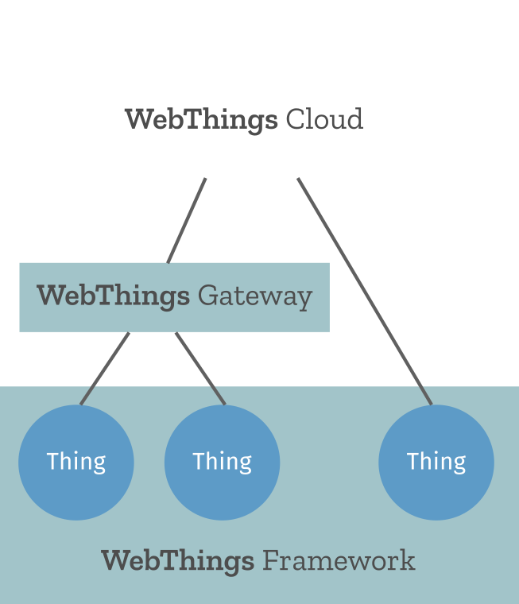

An open platform for monitoring and controlling devices over the web
The Web of Things
The Web of Things (WoT) connects physical objects to the World Wide Web.
The purpose of the Web of Things is to create a decentralised Internet of Things (IoT) by giving connected devices URLs on the web to make them linkable and discoverable, and defining a standard data model and protocol to make them interoperable.
The Web of Things is intended as a unifying application layer for the Internet of Things, linking together multiple underlying IoT protocols using existing web technologies.

The Web of Things is currently undergoing standardisation at the W3C, via the Web of Things Working Group and Web Thing Protocol Community Group.
WebThings
WebThings is an open source implementation of the Web of Things, including the WebThings Gateway, WebThings Framework and WebThings Cloud.
WebThings Gateway
WebThings Gateway is a software distribution for smart home gateways which enables users to directly monitor and control their smart home over the web, without a middleman.
It provides a web-based user interface to monitor and control smart home devices, a rules engine to automate them and an add-ons system to extend the gateway with support for a wide range of existing smart home devices.

WebThings Framework
WebThings Framework is a collection of re-usable software components to help developers build their own web things which directly expose the Web Thing Protocol.
It includes libraries in a range of programming languages including Node.js, Python, Java, Rust and C++ (for Arduino).
WebThings Cloud
WebThings Cloud is a collection of cloud services for remotely managing web things over the internet.
WebThings Cloud provides a remote access service which can create an end-to-end encrypted tunnel between a WoT gateway (or device) and a WoT client so that it can be securely accessed over the internet.
You can learn more about WebThings in our online documentation.